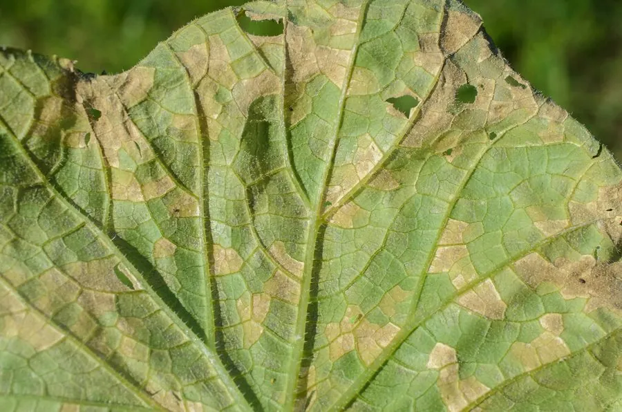

真菌 · 真菌界
黄瓜霜霉病菌 Pseudoperonospora cubensis

卵菌门植物病原，并非真正真菌，侵染黄瓜等葫芦科叶片形成黄褐多角斑，背面生灰黑霉层，流行极快。
- 分类
- 门卵菌门纲霜霉纲目霜霉目科霜霉科属假霜霉属
- 栖息环境
- 葫芦科作物叶片，高温高湿、叶面结露时流行
- 地理分布
- 世界葫芦科产区广布，中国南北方黄瓜产区均有发生
- 保护级别
- 暂无评估；作为重要农业病原广泛存在
物种志
黄瓜霜霉病菌属卵菌门，与真正的真菌亲缘较远，更接近褐藻。其菌丝无隔，孢子囊梗自寄主气孔伸出，分枝末端着生柠檬形孢子囊，孢子囊可随风雨传播并萌发产生游动孢子。有性阶段形成卵孢子，在病残体中越冬。
该菌侵染黄瓜、甜瓜、南瓜等葫芦科作物，叶片正面出现受叶脉限制的多角形黄褐斑，背面在潮湿时长出灰黑色霉层，严重时全叶枯死，露地与大棚均可暴发，流行速度极快。它喜高温高湿，昼夜温差大、叶面结露时最易流行。防治以控制棚内湿度、通风降露、轮作与发病初期喷施卵菌专用药剂为主；由于卵菌与真菌代谢不同，普通杀菌剂往往无效。它不感染人。
形态与习性
- 分类卵菌门霜霉纲，并非真正真菌
- 菌丝无隔菌丝，孢子囊梗自气孔伸出
- 孢子孢子囊柠檬形，可产生游动孢子
- 寄主黄瓜、甜瓜、南瓜等葫芦科作物
- 症状叶面多角形黄褐斑，叶背灰黑霉层
- 防治控湿通风、轮作，用卵菌专用药剂
趣味知识
- 黄瓜霜霉病菌不是真菌，而是卵菌，亲缘上更接近褐藻，普通杀菌剂对它常常无效。
- 病斑受叶脉限制呈多角形，这是霜霉病在黄瓜上最直观的特征。
- 叶背那层灰黑色霉层就是它的孢子囊梗和孢子囊，清晨湿度大时最明显。
- 大棚里湿度高、叶面结露时，它几天就能从零星病斑蔓延成片。